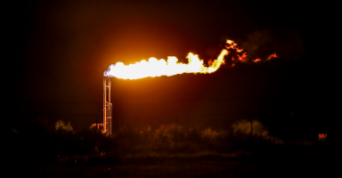

The volume of greenhouse gases released far exceeds what regulators know
AUSTIN, Texas — Wayne Christian wanted to brag, he said, rocking in his burgundy leather chair atop the dais of the powerful Railroad Commission of Texas.